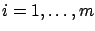

Next: 1.2.2.1 First-order necessary condition
Up: 1.2 Some background on
Previous: 1.2.1.3 Feasible directions, global
Contents
Index
1.2.2 Constrained optimization
Now suppose that  is a surface in
is a surface in
 defined by the equality
constraints
defined by the equality
constraints
where  ,
,

are
 functions from
to
functions from
to
 .
We assume that
.
We assume that  is a
function and
study its minima over
.
is a
function and
study its minima over
.
Subsections
Daniel
2010-12-20